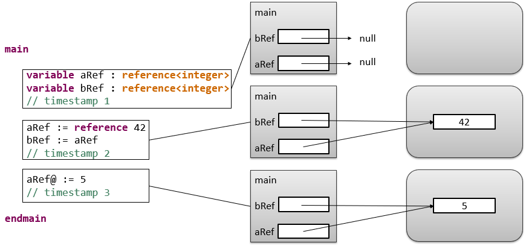

What is actually happening in the memory when we use variables?
In programming, we differentiate between two memory spaces: the stack and the heap.
Basically, every operation starting with the main procedure allocates memory on the stack for itself and its local variables.
Each local variable has its own reserved memory storage.
When we write b := a, the value stored in a is copied to the storage b.
This is demonstrated in the image below.
If we want to manage same storage room using different variables, for example from within different operations, we have to use references.
A reference is in MuLE a generic type, which allows us to create references to values of any other type.
The referenced value is stored under a specific address on the heap, the other part of the internal memory.
The value of the reference variable is the address to the referenced value.
This way, we can access the same storage room via different variables, parameters or attributes.
The standard value of a reference variable is null, i.e. a reference to nothing.
To wrap a value in a reference, we have to write reference VALUE.
To unwrap the referenced value, we have to dereference a variable using the operator @

Copy the code below in your Eclipse and place a breakpoint at the beginning of the program.
Execute the program step by step using the debugger and monitor how the values of the variables behave.
Now let us go back to our chess problem and fix it:
All we needed to do was to change the type of the attribute piece from Piece to reference<Piece>.
As a result, we no longer have any chess pieces on our chess board as we can see in the image below.
Here is a small cheat sheet of what you need to do when working with references:
- Declare a reference variable: variable aRef : reference<integer>
- Store a value on the heap and save its address in a variable: aRef := reference 42
- Dereference the variable to access the referenced value: IO.writeInteger(aRef@)
- Dereference the variable to change the referenced value: aRef@ := 5
- Set a null-reference: aRef := null
- Checking for null-reference: if aRef /= null then IO.writeInteger(aRef@) endif
Checking for null-references is important.
If you attempt to dereference a null-reference you will get a runtime error, i.e. your program will crash.
Let us take a look at the following scenario:
We have two groups of entities: persons and cars.
And as we can see, we have both data related directly to these entities as well as actions that can be performed with them.
Let us try to implement at least a part of this scenario related to the Car entity using the concepts that we have learned so far:
As we can see, we have a composition called Car containing all the data and two separate operations that accept a Car as a parameter.
Clearly, both operations cannot exist without the Car type, yet they are still separated from it within our code.
Furthermore, it can get quite chaotic if we start implementing further entities, e.g. our Person which can also drive.
So the question is, can we merge both data and actions related to each other into a single entity?
And the answer to this question is object-oriented programming.
The core idea of object-oriented programming is to combine semantically related data and operations in one entity.
These entities, called objects, have specific attributes, like for example the mileage of our car, and can perform operations by themselves.
For example our car can drive, that means that we can invoke a drive operation directly on a car instead of calling a separate drive operation and pass a car as a parameter.
There is a lot more to the concept of object-oriented programming, which we will cover shortly.
Continuing our Persons and Cars scenario, we want to actually sell a car now.
Or at least transfer it from one person to another.
The arrows in the image above are not just for show.
Remember how at the beginning of this chapter we were talking about values and references?
If we would use value types, first every Person would automatically have a car in our scenario.
Second, if a person would sell a car to another person, the value of the car would be copied.
Meaning we would sell a copy of our car while keeping the original and get the money, sounds great right?
Sadly, our scenarios should represent the real world, so we have to rely heavily on reference types when writing object-oriented programs.
Our main actors are still persons, so to finish our scenario we have to implement our Person:
Now that we have everything ready, let us test this scenario:
Your will find the entire code below:
As we can see, currently we can access the attributes of our object directly, which can lead to a following scenario:
Bob manipulates the mileage of his car before selling to Alice to get a higher price.
This kind of a situation should be avoided. Our goal is to somehow restrict the accessibility of attributes.
In MuLE, by default, all attributes and operations in compositions are visible from the outside.
This way, we can freely access their values and change them, meaning we have reading and writing access to them.
To restrict this, we can use visibility modifiers, e.g. private which restricts the visibility only to the containing composition.
We can access a private attribute only within the same composition, e.g. in the operations drive and readData.
In a sense, the operation readData provides us reading access to these attributes.
Let us take a look at the scenario in the image below:
Here we have three different yet related groups of entities: cars, busses and trucks.
All of these entities have a lot in common, they are all vehicles, meaning that right now we have a lot of redundancy.
But they their own specific features, so we cannot just simply define all of them in a single class.
We would end up with unnecessary attributes for specifiy vehicle types.
This is where the concept of inheritance comes into place:
We define a super type, e.g. Vehicle in our case, and place all common attributes and operations into that type.
Furthermore, we specify that our Car, Bus and Truck are subtypes of vehicle Vehicle.
That means that they inherit all features provided by Vehicle and its own potential super types.
Features specific to the subtypes, e.g. Number of passenders remain in the super types.
Implementing inheritance
The code example below demonstrates how we can do it in MuLE.
Since the modifier private restricts the visibility of an attribute only to the containing composition,
we have to change it to protected, which makes it visible in the containing composition as well as its subtypes.
Redefining inhretited operations
In the code example above, the operation readData() prints only the data which is common to all vehicles.
If we call this operation on an instance of Truck, we will not get the information about its ton rating.
To alleviate this problem, we have to redefine the inherited operation readData().
When redefining, we can simply copy paste the inherited functionality and add new one.
This leads to redundant code and should be avoided if possible.
In our case, we can call the inherited operation in the redefining operation first using the keyword super, and then add new functionality.

Abstract types and operations
Sometimes it makes no sense to create instances from super types as they may lack sufficient informations.
In our scenario this may not be entirely the case, but lets pretend that it is and make Vehicle abstract.
As a result, we no longer can instantiate it and have to use its subtypes instead.
As we see, we can declare a variable using a super type and instantiate it using a subtype without any problems.
The static type of the variable is still reference<Vehicle>, however the referenced object is either a Car or any other subtype of Vehicle.
Abstract compositions may also have abstract operations.
Such operations do not provide any functionality, which is possible since we cannot instantiate an abstract type anyway.
However, they must be redefined in the subtypes, otherwise the program will not compile.
Inheritance in action
You will find the complete Vehicles and Persons example in the code below.
Copy the code into your eclipse, place a breakpoint in the main procedure, and execute it step by step.
Take a closer look at the loop in the main procedure.
It includes a let statement which allows us to check what types objects actually have.
It acts somewhat similarly to an if statment, it declares a variable with a specific type and if the object in question has that type,
assigns the object to that variable and executed the corresponding lines of code where we can use the variable to access type specific features.